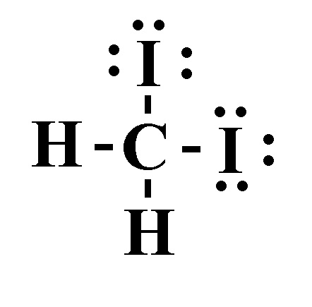

Press Ctrl-Z to toggle the answers.
Chapter 11
Apr 6, 2023
name: ______________________________________
1) Determine the normal boiling point (at 760 mm Hg) of a substance whose vapor pressure is 36.6 mm Hg at 45.7°C and has a ΔHvap of 31.0 kJ/mol.
A) 431 K*
B) 253 K
C) 47.5 K
D) 320. K
2) Which of the following has the lowest viscosity?
A)

B)

C)
 *
*D) 
3) Which substance has the highest intermolecular forces?
A) CH4
B) CH3CH2CH2CH3*
C) CH3CH2CH3
D) CH3CH3
4) Place the following substances in order of increasing vapor pressure at a given temperature.
SF6 SiH4 SF4
A) SiH4 < SF4 < SF6
B) SF6 < SiH4 < SF4
C) SF4 < SF6 < SiH4*
D) SF6 < SF4 < SiH4
5) What is the strongest type of intermolecular force present in NH3?
A) London dispersion forces
B) Ion-dipole forces
C) Dipole-dipole forces
D) Hydrogen bonding*
E) None of the above.
6) Using the phase diagram below, what phase transition would occur if H
2O was cooled from 43°C to -54°C at 0.005 atm?

A) Sublimation
B) Freezing
C) Condensation
D) Deposition*
7) Identify the place which has the highest boiling point of water.
A) New Orleans, sea level
B) Mt. Everest, 29,035 feet
C) Denver, Colorado, 5280 feet
D) Death Valley, 282 feet below sea level*
8) How much energy is required to vaporize 58.4 g of dichloromethane (CH2Cl2) at its boiling point, if its ΔHvap is 28.06 kJ/mol?
A) 0.688 kJ/mol
B) 177 kJ/mol
C) 1640 kJ/mol
D) 19.3 kJ/mol*
9) Which of the following statements is TRUE?
A) Two bonded oxygen atoms are at a lower potential energy than two individual oxygen atoms*
B) Decreasing the temperature of a liquid generally causes it to become a gas
C) London dispersion forces are generally stronger than dipole-dipole forces
D) Forming new bonds requires energy
10) How much energy is required to heat 35.4 g H2O from a liquid at 41.1°C to a gas at 110°C?
ΔHvap = 40.7 kJ/mol
Cliquid = 4.184 \( \frac{J}{g°C} \)
Cgas = 2.01 \( \frac{J}{g°C} \)
Csolid = 2.09 \( \frac{J}{g°C} \)
Tmelting = 0°C
Tboiling = 100°C
A) 89.4 kJ*
B) 9520 kJ
C) 1450 kJ
D) 93.9 kJ
11) Which of the following increases the rate of vaporization?
A) Strong intermolecular bonds
B) Decreasing temperature
C) Increasing temperature*
D) Decreasing the surface area
12) Choose the substance with the highest ΔHvap.
A) NH3
B) OF2
C) KF*
D) CH4
13) Choose the substance with the lowest vapor pressure at a given temperature.
A) H2O*
B) H2S
C) O2
D) SiS2
14) What is the main reason why the boiling point of NH3 is much higher than that of PH3?
A) NH3 can hydrogen bond whereas PH3 cannot*
B) NH3 has dipole-dipole forces whereas PH3 does not
C) NH3 has stronger London dispersion forces than PH3
D) PH3 can hydrogen bond whereas NH3 cannot
15) (SLO 1.2) In liquid butanol CH3CH2CH2CH2OH, which intermolecular forces are present?
A) Dispersion, hydrogen bonding, and dipole-dipole forces are present*
B) Only dispersion and dipole-dipole forces are present
C) Only hydrogen bonding forces are present
D) Only dipole-dipole and ion-dipole forces are present
16) (SLO 1.5) List the compounds below in decreasing boiling point order.
CH3CH2CH2CH2CH3 Ne CH3CH2CH2CHO
A) Ne > CH3CH2CH2CHO > CH3CH2CH2CH2CH3
B) CH3CH2CH2CH2CH3 > Ne > CH3CH2CH2CHO
C) CH3CH2CH2CH2CH3 > CH3CH2CH2CHO > Ne
D) CH3CH2CH2CHO > CH3CH2CH2CH2CH3 > Ne*